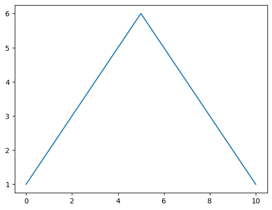

import pandas as pd # pd 라는 이름으로 pandas 패키지 불러오기Pandas 기본 조작방법 익히기 코드 보기
데이터프레임 만들고 조작하기
만들기, 조회하기, 값 추가하기
lst = ['a', 'b', 'c']
s1 = pd.Series(lst)
s10 a
1 b
2 c
dtype: objecttype(s1)pandas.core.series.Seriesdic = {1:'a', 2:'b', 3:'c'}
s2 = pd.Series(dic)
s21 a
2 b
3 c
dtype: objectdict = {'a':[1,2,3], 'b':[2,3,4], 'c':[3,4,5]}
df = pd.DataFrame(dict) # 데이터 프래임 만들기
df| a | b | c | |
|---|---|---|---|
| 0 | 1 | 2 | 3 |
| 1 | 2 | 3 | 4 |
| 2 | 3 | 4 | 5 |
lst1 = ['홍길동', 20, '남']
lst2 = ['이순신', 21, '남']
lst3 = ['김개동', 22, '남']
df2 = pd.DataFrame([lst1, lst2, lst3], columns=['name', 'age', 'gender'])
df2| name | age | gender | |
|---|---|---|---|
| 0 | 홍길동 | 20 | 남 |
| 1 | 이순신 | 21 | 남 |
| 2 | 김개동 | 22 | 남 |
df2.rename(columns={'name':'이름','age':'나이','gender':'성별'}, inplace=True)df2| 이름 | 나이 | 성별 | |
|---|---|---|---|
| 0 | 홍길동 | 20 | 남 |
| 1 | 이순신 | 21 | 남 |
| 2 | 김개동 | 22 | 남 |
df2.drop(0)
# df2.drop(0, inplace=True)
# df2 = df2.drop(0)| 이름 | 나이 | 성별 | |
|---|---|---|---|
| 1 | 이순신 | 21 | 남 |
| 2 | 김개동 | 22 | 남 |
df2| 이름 | 나이 | 성별 | |
|---|---|---|---|
| 0 | 홍길동 | 20 | 남 |
| 1 | 이순신 | 21 | 남 |
| 2 | 김개동 | 22 | 남 |
df3 = df2.drop(0)
df3.drop('성별', axis=1, inplace=True)
df3| 이름 | 나이 | |
|---|---|---|
| 1 | 이순신 | 21 |
| 2 | 김개동 | 22 |
df2.loc[[0, 2]]| 이름 | 나이 | 성별 | |
|---|---|---|---|
| 0 | 홍길동 | 20 | 남 |
| 2 | 김개동 | 22 | 남 |
df2.loc[0:3]| 이름 | 나이 | 성별 | |
|---|---|---|---|
| 0 | 홍길동 | 20 | 남 |
| 1 | 이순신 | 21 | 남 |
| 2 | 김개동 | 22 | 남 |
df2['이름']0 홍길동
1 이순신
2 김개동
Name: 이름, dtype: objectdf2.이름0 홍길동
1 이순신
2 김개동
Name: 이름, dtype: objectexam_data = {'이름' : ['서준', '우현', '인아'],
'수학' : [90, 80, 70],
'영어' : [98, 89, 95],
'음악' : [85, 95, 100],
'체육' : [100, 90, 90]}
df = pd.DataFrame(exam_data)
df| 이름 | 수학 | 영어 | 음악 | 체육 | |
|---|---|---|---|---|---|
| 0 | 서준 | 90 | 98 | 85 | 100 |
| 1 | 우현 | 80 | 89 | 95 | 90 |
| 2 | 인아 | 70 | 95 | 100 | 90 |
df.set_index('이름', inplace=True)
df| 수학 | 영어 | 음악 | 체육 | |
|---|---|---|---|---|
| 이름 | ||||
| 서준 | 90 | 98 | 85 | 100 |
| 우현 | 80 | 89 | 95 | 90 |
| 인아 | 70 | 95 | 100 | 90 |
df['총점'] = df['수학'] + df['영어'] + df['음악'] + df['체육']df| 수학 | 영어 | 음악 | 체육 | 총점 | |
|---|---|---|---|---|---|
| 이름 | |||||
| 서준 | 90 | 98 | 85 | 100 | 373 |
| 우현 | 80 | 89 | 95 | 90 | 354 |
| 인아 | 70 | 95 | 100 | 90 | 355 |
df['평균'] = df['총점'] / 4df| 수학 | 영어 | 음악 | 체육 | 총점 | 평균 | |
|---|---|---|---|---|---|---|
| 이름 | ||||||
| 서준 | 90 | 98 | 85 | 100 | 373 | 93.25 |
| 우현 | 80 | 89 | 95 | 90 | 354 | 88.50 |
| 인아 | 70 | 95 | 100 | 90 | 355 | 88.75 |
df2 = pd.DataFrame(exam_data)
df2| 이름 | 수학 | 영어 | 음악 | 체육 | |
|---|---|---|---|---|---|
| 0 | 서준 | 90 | 98 | 85 | 100 |
| 1 | 우현 | 80 | 89 | 95 | 90 |
| 2 | 인아 | 70 | 95 | 100 | 90 |
df2.set_index('이름', inplace=True) # 컬럼중 하나를 지정해서 index로 사용
df2| 수학 | 영어 | 음악 | 체육 | |
|---|---|---|---|---|
| 이름 | ||||
| 서준 | 90 | 98 | 85 | 100 |
| 우현 | 80 | 89 | 95 | 90 |
| 인아 | 70 | 95 | 100 | 90 |
df2.loc['길동'] = [100, 100, 100, 100] # 리스트 형식으로 추가df2| 수학 | 영어 | 음악 | 체육 | |
|---|---|---|---|---|
| 이름 | ||||
| 서준 | 90 | 98 | 85 | 100 |
| 우현 | 80 | 89 | 95 | 90 |
| 인아 | 70 | 95 | 100 | 90 |
| 길동 | 100 | 100 | 100 | 100 |
df2.loc['황진'] = {'수학': 12, '영어' : 30, '음악' : 20, '체육' : 50} # dict 형식으로 추가df2| 수학 | 영어 | 음악 | 체육 | |
|---|---|---|---|---|
| 이름 | ||||
| 서준 | 90 | 98 | 85 | 100 |
| 우현 | 80 | 89 | 95 | 90 |
| 인아 | 70 | 95 | 100 | 90 |
| 길동 | 100 | 100 | 100 | 100 |
| 황진 | 12 | 30 | 20 | 50 |
df2.T # 행열 바꾸기 (전치)| 이름 | 서준 | 우현 | 인아 | 길동 | 황진 |
|---|---|---|---|---|---|
| 수학 | 90 | 80 | 70 | 100 | 12 |
| 영어 | 98 | 89 | 95 | 100 | 30 |
| 음악 | 85 | 95 | 100 | 100 | 20 |
| 체육 | 100 | 90 | 90 | 100 | 50 |
# 데이터프레임 df를 전치하기 (메소드 활용) df = df.transpose()
'''
메소드는 클래스가 가지는 함수
냉장고 예시에서 문열기(), 음식넣기(), 문닫기()
'''
# 데이터프레임 df를 다시 전치하기 (클래스 속성 활용) df = df.T
'''
클래스 속성은 클래스에서 있던 변수
냉장고가 열려있는지 or 닫혀있는지
'''데이터 프레임가지고 계산하기
df2 # 학점 계산을 위해서 데이터 만들기
df2['총점'] = df2['수학'] + df2['영어'] + df2['음악'] + df2['체육']
df2['평균'] = df2['총점'] / 4df2| 수학 | 영어 | 음악 | 체육 | 총점 | 평균 | |
|---|---|---|---|---|---|---|
| 이름 | ||||||
| 서준 | 90 | 98 | 85 | 100 | 373 | 93.25 |
| 우현 | 80 | 89 | 95 | 90 | 354 | 88.50 |
| 인아 | 70 | 95 | 100 | 90 | 355 | 88.75 |
| 길동 | 100 | 100 | 100 | 100 | 400 | 100.00 |
| 황진 | 12 | 30 | 20 | 50 | 112 | 28.00 |
grade = [] # 학점을 한번에 입력하기 위해 리스트 이용
for avg in df2['평균']:
if avg >= 90:
grade.append('A')
elif avg >= 80:
grade.append('B')
else:
grade.append('C')
print("위에서 부터 학생들 성적 : ", grade)위에서 부터 학생들 성적 : ['A', 'B', 'B', 'A', 'C']df2['성적'] = grade
df2| 수학 | 영어 | 음악 | 체육 | 총점 | 평균 | 성적 | |
|---|---|---|---|---|---|---|---|
| 이름 | |||||||
| 서준 | 90 | 98 | 85 | 100 | 373 | 93.25 | A |
| 우현 | 80 | 89 | 95 | 90 | 354 | 88.50 | B |
| 인아 | 70 | 95 | 100 | 90 | 355 | 88.75 | B |
| 길동 | 100 | 100 | 100 | 100 | 400 | 100.00 | A |
| 황진 | 12 | 30 | 20 | 50 | 112 | 28.00 | C |
# 성적이 A 이면 장학생으로 선정해주는 함수
def scholarship(row):
if row == 'A':
return '장학생'
else:
return '비장학생'df2['장학여부'] = df2['성적'].apply(scholarship) # apply는 함수를 바로 적용해준다고 생각하면 좋을듯
df2| 수학 | 영어 | 음악 | 체육 | 총점 | 평균 | 성적 | 장학여부 | |
|---|---|---|---|---|---|---|---|---|
| 이름 | ||||||||
| 서준 | 90 | 98 | 85 | 100 | 373 | 93.25 | A | 장학생 |
| 우현 | 80 | 89 | 95 | 90 | 354 | 88.50 | B | 비장학생 |
| 인아 | 70 | 95 | 100 | 90 | 355 | 88.75 | B | 비장학생 |
| 길동 | 100 | 100 | 100 | 100 | 400 | 100.00 | A | 장학생 |
| 황진 | 12 | 30 | 20 | 50 | 112 | 28.00 | C | 비장학생 |
외부 데이터 파일 불러오기
# 이 부분은 구글 코랩 사용중이라 따로 불러온 코드.
# 다른 환경에서는 실행 필요 x
#from google.colab import drive
#drive.mount('/content/drive')df = pd.read_csv('/content/drive/MyDrive/2023 빅리더/파이썬/data/pythondata/csv_sample.csv') # csv 파일 불러오기df.to_csv('0627.csv') # csv 파일 저장하기# 분석할 파일 불러오기
df = pd.read_excel('/content/drive/MyDrive/2023 빅리더/파이썬/data/pythondata/남북한발전전력량.xlsx')
df| 전력량 (억㎾h) | 발전 전력별 | 1990 | 1991 | 1992 | 1993 | 1994 | 1995 | 1996 | 1997 | ... | 2007 | 2008 | 2009 | 2010 | 2011 | 2012 | 2013 | 2014 | 2015 | 2016 | |
|---|---|---|---|---|---|---|---|---|---|---|---|---|---|---|---|---|---|---|---|---|---|
| 0 | 남한 | 합계 | 1077 | 1186 | 1310 | 1444 | 1650 | 1847 | 2055 | 2244 | ... | 4031 | 4224 | 4336 | 4747 | 4969 | 5096 | 5171 | 5220 | 5281 | 5404 |
| 1 | NaN | 수력 | 64 | 51 | 49 | 60 | 41 | 55 | 52 | 54 | ... | 50 | 56 | 56 | 65 | 78 | 77 | 84 | 78 | 58 | 66 |
| 2 | NaN | 화력 | 484 | 573 | 696 | 803 | 1022 | 1122 | 1264 | 1420 | ... | 2551 | 2658 | 2802 | 3196 | 3343 | 3430 | 3581 | 3427 | 3402 | 3523 |
| 3 | NaN | 원자력 | 529 | 563 | 565 | 581 | 587 | 670 | 739 | 771 | ... | 1429 | 1510 | 1478 | 1486 | 1547 | 1503 | 1388 | 1564 | 1648 | 1620 |
| 4 | NaN | 신재생 | - | - | - | - | - | - | - | - | ... | - | - | - | - | - | 86 | 118 | 151 | 173 | 195 |
| 5 | 북한 | 합계 | 277 | 263 | 247 | 221 | 231 | 230 | 213 | 193 | ... | 236 | 255 | 235 | 237 | 211 | 215 | 221 | 216 | 190 | 239 |
| 6 | NaN | 수력 | 156 | 150 | 142 | 133 | 138 | 142 | 125 | 107 | ... | 133 | 141 | 125 | 134 | 132 | 135 | 139 | 130 | 100 | 128 |
| 7 | NaN | 화력 | 121 | 113 | 105 | 88 | 93 | 88 | 88 | 86 | ... | 103 | 114 | 110 | 103 | 79 | 80 | 82 | 86 | 90 | 111 |
| 8 | NaN | 원자력 | - | - | - | - | - | - | - | - | ... | - | - | - | - | - | - | - | - | - | - |
9 rows × 29 columns
df = pd.read_csv('/content/drive/MyDrive/2023 빅리더/파이썬/data/pythondata/auto-mpg.csv', header=None)
df| 0 | 1 | 2 | 3 | 4 | 5 | 6 | 7 | 8 | |
|---|---|---|---|---|---|---|---|---|---|
| 0 | 18.0 | 8 | 307.0 | 130.0 | 3504.0 | 12.0 | 70 | 1 | chevrolet chevelle malibu |
| 1 | 15.0 | 8 | 350.0 | 165.0 | 3693.0 | 11.5 | 70 | 1 | buick skylark 320 |
| 2 | 18.0 | 8 | 318.0 | 150.0 | 3436.0 | 11.0 | 70 | 1 | plymouth satellite |
| 3 | 16.0 | 8 | 304.0 | 150.0 | 3433.0 | 12.0 | 70 | 1 | amc rebel sst |
| 4 | 17.0 | 8 | 302.0 | 140.0 | 3449.0 | 10.5 | 70 | 1 | ford torino |
| ... | ... | ... | ... | ... | ... | ... | ... | ... | ... |
| 393 | 27.0 | 4 | 140.0 | 86.00 | 2790.0 | 15.6 | 82 | 1 | ford mustang gl |
| 394 | 44.0 | 4 | 97.0 | 52.00 | 2130.0 | 24.6 | 82 | 2 | vw pickup |
| 395 | 32.0 | 4 | 135.0 | 84.00 | 2295.0 | 11.6 | 82 | 1 | dodge rampage |
| 396 | 28.0 | 4 | 120.0 | 79.00 | 2625.0 | 18.6 | 82 | 1 | ford ranger |
| 397 | 31.0 | 4 | 119.0 | 82.00 | 2720.0 | 19.4 | 82 | 1 | chevy s-10 |
398 rows × 9 columns
df.columns = ['mpg','cylinders','displacement',
'horsepower','weight', 'acceleration',
'model year','origin','name']df| mpg | cylinders | displacement | horsepower | weight | acceleration | model year | origin | name | |
|---|---|---|---|---|---|---|---|---|---|
| 0 | 18.0 | 8 | 307.0 | 130.0 | 3504.0 | 12.0 | 70 | 1 | chevrolet chevelle malibu |
| 1 | 15.0 | 8 | 350.0 | 165.0 | 3693.0 | 11.5 | 70 | 1 | buick skylark 320 |
| 2 | 18.0 | 8 | 318.0 | 150.0 | 3436.0 | 11.0 | 70 | 1 | plymouth satellite |
| 3 | 16.0 | 8 | 304.0 | 150.0 | 3433.0 | 12.0 | 70 | 1 | amc rebel sst |
| 4 | 17.0 | 8 | 302.0 | 140.0 | 3449.0 | 10.5 | 70 | 1 | ford torino |
| ... | ... | ... | ... | ... | ... | ... | ... | ... | ... |
| 393 | 27.0 | 4 | 140.0 | 86.00 | 2790.0 | 15.6 | 82 | 1 | ford mustang gl |
| 394 | 44.0 | 4 | 97.0 | 52.00 | 2130.0 | 24.6 | 82 | 2 | vw pickup |
| 395 | 32.0 | 4 | 135.0 | 84.00 | 2295.0 | 11.6 | 82 | 1 | dodge rampage |
| 396 | 28.0 | 4 | 120.0 | 79.00 | 2625.0 | 18.6 | 82 | 1 | ford ranger |
| 397 | 31.0 | 4 | 119.0 | 82.00 | 2720.0 | 19.4 | 82 | 1 | chevy s-10 |
398 rows × 9 columns
df.head()| mpg | cylinders | displacement | horsepower | weight | acceleration | model year | origin | name | |
|---|---|---|---|---|---|---|---|---|---|
| 0 | 18.0 | 8 | 307.0 | 130.0 | 3504.0 | 12.0 | 70 | 1 | chevrolet chevelle malibu |
| 1 | 15.0 | 8 | 350.0 | 165.0 | 3693.0 | 11.5 | 70 | 1 | buick skylark 320 |
| 2 | 18.0 | 8 | 318.0 | 150.0 | 3436.0 | 11.0 | 70 | 1 | plymouth satellite |
| 3 | 16.0 | 8 | 304.0 | 150.0 | 3433.0 | 12.0 | 70 | 1 | amc rebel sst |
| 4 | 17.0 | 8 | 302.0 | 140.0 | 3449.0 | 10.5 | 70 | 1 | ford torino |
df.tail()| mpg | cylinders | displacement | horsepower | weight | acceleration | model year | origin | name | |
|---|---|---|---|---|---|---|---|---|---|
| 393 | 27.0 | 4 | 140.0 | 86.00 | 2790.0 | 15.6 | 82 | 1 | ford mustang gl |
| 394 | 44.0 | 4 | 97.0 | 52.00 | 2130.0 | 24.6 | 82 | 2 | vw pickup |
| 395 | 32.0 | 4 | 135.0 | 84.00 | 2295.0 | 11.6 | 82 | 1 | dodge rampage |
| 396 | 28.0 | 4 | 120.0 | 79.00 | 2625.0 | 18.6 | 82 | 1 | ford ranger |
| 397 | 31.0 | 4 | 119.0 | 82.00 | 2720.0 | 19.4 | 82 | 1 | chevy s-10 |
df.shape(398, 9)df.info()<class 'pandas.core.frame.DataFrame'>
RangeIndex: 398 entries, 0 to 397
Data columns (total 9 columns):
# Column Non-Null Count Dtype
--- ------ -------------- -----
0 mpg 398 non-null float64
1 cylinders 398 non-null int64
2 displacement 398 non-null float64
3 horsepower 398 non-null object
4 weight 398 non-null float64
5 acceleration 398 non-null float64
6 model year 398 non-null int64
7 origin 398 non-null int64
8 name 398 non-null object
dtypes: float64(4), int64(3), object(2)
memory usage: 28.1+ KBdf.describe()| mpg | cylinders | displacement | weight | acceleration | model year | origin | |
|---|---|---|---|---|---|---|---|
| count | 398.000000 | 398.000000 | 398.000000 | 398.000000 | 398.000000 | 398.000000 | 398.000000 |
| mean | 23.514573 | 5.454774 | 193.425879 | 2970.424623 | 15.568090 | 76.010050 | 1.572864 |
| std | 7.815984 | 1.701004 | 104.269838 | 846.841774 | 2.757689 | 3.697627 | 0.802055 |
| min | 9.000000 | 3.000000 | 68.000000 | 1613.000000 | 8.000000 | 70.000000 | 1.000000 |
| 25% | 17.500000 | 4.000000 | 104.250000 | 2223.750000 | 13.825000 | 73.000000 | 1.000000 |
| 50% | 23.000000 | 4.000000 | 148.500000 | 2803.500000 | 15.500000 | 76.000000 | 1.000000 |
| 75% | 29.000000 | 8.000000 | 262.000000 | 3608.000000 | 17.175000 | 79.000000 | 2.000000 |
| max | 46.600000 | 8.000000 | 455.000000 | 5140.000000 | 24.800000 | 82.000000 | 3.000000 |
df['mpg'].max()46.6# 데이터 프레임 각 요소별로 갯수 확인
unique_values = df['origin'].value_counts()
unique_values1 249
3 79
2 70
Name: origin, dtype: int64df.corr() # 상관계수FutureWarning: The default value of numeric_only in DataFrame.corr is deprecated. In a future version, it will default to False. Select only valid columns or specify the value of numeric_only to silence this warning.
df.corr() # 상관계수| mpg | cylinders | displacement | weight | acceleration | model year | origin | |
|---|---|---|---|---|---|---|---|
| mpg | 1.000000 | -0.775396 | -0.804203 | -0.831741 | 0.420289 | 0.579267 | 0.563450 |
| cylinders | -0.775396 | 1.000000 | 0.950721 | 0.896017 | -0.505419 | -0.348746 | -0.562543 |
| displacement | -0.804203 | 0.950721 | 1.000000 | 0.932824 | -0.543684 | -0.370164 | -0.609409 |
| weight | -0.831741 | 0.896017 | 0.932824 | 1.000000 | -0.417457 | -0.306564 | -0.581024 |
| acceleration | 0.420289 | -0.505419 | -0.543684 | -0.417457 | 1.000000 | 0.288137 | 0.205873 |
| model year | 0.579267 | -0.348746 | -0.370164 | -0.306564 | 0.288137 | 1.000000 | 0.180662 |
| origin | 0.563450 | -0.562543 | -0.609409 | -0.581024 | 0.205873 | 0.180662 | 1.000000 |
df[['mpg','weight']].corr()| mpg | weight | |
|---|---|---|
| mpg | 1.000000 | -0.831741 |
| weight | -0.831741 | 1.000000 |
df.head()| mpg | cylinders | displacement | horsepower | weight | acceleration | model year | origin | name | |
|---|---|---|---|---|---|---|---|---|---|
| 0 | 18.0 | 8 | 307.0 | 130.0 | 3504.0 | 12.0 | 70 | 1 | chevrolet chevelle malibu |
| 1 | 15.0 | 8 | 350.0 | 165.0 | 3693.0 | 11.5 | 70 | 1 | buick skylark 320 |
| 2 | 18.0 | 8 | 318.0 | 150.0 | 3436.0 | 11.0 | 70 | 1 | plymouth satellite |
| 3 | 16.0 | 8 | 304.0 | 150.0 | 3433.0 | 12.0 | 70 | 1 | amc rebel sst |
| 4 | 17.0 | 8 | 302.0 | 140.0 | 3449.0 | 10.5 | 70 | 1 | ford torino |
df[df['mpg'] > 15]| mpg | cylinders | displacement | horsepower | weight | acceleration | model year | origin | name | |
|---|---|---|---|---|---|---|---|---|---|
| 0 | 18.0 | 8 | 307.0 | 130.0 | 3504.0 | 12.0 | 70 | 1 | chevrolet chevelle malibu |
| 2 | 18.0 | 8 | 318.0 | 150.0 | 3436.0 | 11.0 | 70 | 1 | plymouth satellite |
| 3 | 16.0 | 8 | 304.0 | 150.0 | 3433.0 | 12.0 | 70 | 1 | amc rebel sst |
| 4 | 17.0 | 8 | 302.0 | 140.0 | 3449.0 | 10.5 | 70 | 1 | ford torino |
| 14 | 24.0 | 4 | 113.0 | 95.00 | 2372.0 | 15.0 | 70 | 3 | toyota corona mark ii |
| ... | ... | ... | ... | ... | ... | ... | ... | ... | ... |
| 393 | 27.0 | 4 | 140.0 | 86.00 | 2790.0 | 15.6 | 82 | 1 | ford mustang gl |
| 394 | 44.0 | 4 | 97.0 | 52.00 | 2130.0 | 24.6 | 82 | 2 | vw pickup |
| 395 | 32.0 | 4 | 135.0 | 84.00 | 2295.0 | 11.6 | 82 | 1 | dodge rampage |
| 396 | 28.0 | 4 | 120.0 | 79.00 | 2625.0 | 18.6 | 82 | 1 | ford ranger |
| 397 | 31.0 | 4 | 119.0 | 82.00 | 2720.0 | 19.4 | 82 | 1 | chevy s-10 |
329 rows × 9 columns
df_groupby = df.groupby(by=['model year'])
df_groupby.groups{70: [0, 1, 2, 3, 4, 5, 6, 7, 8, 9, 10, 11, 12, 13, 14, 15, 16, 17, 18, 19, 20, 21, 22, 23, 24, 25, 26, 27, 28], 71: [29, 30, 31, 32, 33, 34, 35, 36, 37, 38, 39, 40, 41, 42, 43, 44, 45, 46, 47, 48, 49, 50, 51, 52, 53, 54, 55, 56], 72: [57, 58, 59, 60, 61, 62, 63, 64, 65, 66, 67, 68, 69, 70, 71, 72, 73, 74, 75, 76, 77, 78, 79, 80, 81, 82, 83, 84], 73: [85, 86, 87, 88, 89, 90, 91, 92, 93, 94, 95, 96, 97, 98, 99, 100, 101, 102, 103, 104, 105, 106, 107, 108, 109, 110, 111, 112, 113, 114, 115, 116, 117, 118, 119, 120, 121, 122, 123, 124], 74: [125, 126, 127, 128, 129, 130, 131, 132, 133, 134, 135, 136, 137, 138, 139, 140, 141, 142, 143, 144, 145, 146, 147, 148, 149, 150, 151], 75: [152, 153, 154, 155, 156, 157, 158, 159, 160, 161, 162, 163, 164, 165, 166, 167, 168, 169, 170, 171, 172, 173, 174, 175, 176, 177, 178, 179, 180, 181], 76: [182, 183, 184, 185, 186, 187, 188, 189, 190, 191, 192, 193, 194, 195, 196, 197, 198, 199, 200, 201, 202, 203, 204, 205, 206, 207, 208, 209, 210, 211, 212, 213, 214, 215], 77: [216, 217, 218, 219, 220, 221, 222, 223, 224, 225, 226, 227, 228, 229, 230, 231, 232, 233, 234, 235, 236, 237, 238, 239, 240, 241, 242, 243], 78: [244, 245, 246, 247, 248, 249, 250, 251, 252, 253, 254, 255, 256, 257, 258, 259, 260, 261, 262, 263, 264, 265, 266, 267, 268, 269, 270, 271, 272, 273, 274, 275, 276, 277, 278, 279], 79: [280, 281, 282, 283, 284, 285, 286, 287, 288, 289, 290, 291, 292, 293, 294, 295, 296, 297, 298, 299, 300, 301, 302, 303, 304, 305, 306, 307, 308], 80: [309, 310, 311, 312, 313, 314, 315, 316, 317, 318, 319, 320, 321, 322, 323, 324, 325, 326, 327, 328, 329, 330, 331, 332, 333, 334, 335, 336, 337], 81: [338, 339, 340, 341, 342, 343, 344, 345, 346, 347, 348, 349, 350, 351, 352, 353, 354, 355, 356, 357, 358, 359, 360, 361, 362, 363, 364, 365, 366], 82: [367, 368, 369, 370, 371, 372, 373, 374, 375, 376, 377, 378, 379, 380, 381, 382, 383, 384, 385, 386, 387, 388, 389, 390, 391, 392, 393, 394, 395, 396, 397]}l1 = [{'name': 'John', 'job': "teacher"},
{'name': 'Nate', 'job': "student"},
{'name': 'Fred', 'job': "developer"}]
l2 = [{'name': 'Ed', 'job': "dentist"},
{'name': 'Jack', 'job': "farmer"},
{'name': 'Ted', 'job': "designer"}]
df1 = pd.DataFrame(l1, columns = ['name', 'job'])
df2 = pd.DataFrame(l2, columns = ['name', 'job'])df1| name | job | |
|---|---|---|
| 0 | John | teacher |
| 1 | Nate | student |
| 2 | Fred | developer |
df2| name | job | |
|---|---|---|
| 0 | Ed | dentist |
| 1 | Jack | farmer |
| 2 | Ted | designer |
df1.append(df2) # df1 기준으로 df2 붙이기FutureWarning: The frame.append method is deprecated and will be removed from pandas in a future version. Use pandas.concat instead.
df1.append(df2)| name | job | |
|---|---|---|
| 0 | John | teacher |
| 1 | Nate | student |
| 2 | Fred | developer |
| 0 | Ed | dentist |
| 1 | Jack | farmer |
| 2 | Ted | designer |
df1.append(df2, ignore_index=True) # df1 기준으로 df2 붙이면서 인덱스도 초기화FutureWarning: The frame.append method is deprecated and will be removed from pandas in a future version. Use pandas.concat instead.
df1.append(df2, ignore_index=True)| name | job | |
|---|---|---|
| 0 | John | teacher |
| 1 | Nate | student |
| 2 | Fred | developer |
| 3 | Ed | dentist |
| 4 | Jack | farmer |
| 5 | Ted | designer |
l1 = [{'name': 'John', 'job': "teacher"},
{'name': 'Nate', 'job': "student"},
{'name': 'Fred', 'job': "developer"}]
l2 = [{'name': 'Ed', 'work': "dentist"},
{'name': 'Nate', 'work': "farmer"},
{'name': 'Ted', 'work': "designer"}]
df3 = pd.DataFrame(l1, columns = ['name', 'job'])
df4 = pd.DataFrame(l2, columns = ['name', 'work'])df3| name | job | |
|---|---|---|
| 0 | John | teacher |
| 1 | Nate | student |
| 2 | Fred | developer |
df4| name | work | |
|---|---|---|
| 0 | Ed | dentist |
| 1 | Nate | farmer |
| 2 | Ted | designer |
# 교집합
merge_inner = pd.merge(df3, df4)
merge_inner| name | job | work | |
|---|---|---|---|
| 0 | Nate | student | farmer |
# 합집합
merge_outter = pd.merge(df3, df4, on = "name", how = 'outer')
merge_outter| name | job | work | |
|---|---|---|---|
| 0 | John | teacher | NaN |
| 1 | Nate | student | farmer |
| 2 | Fred | developer | NaN |
| 3 | Ed | NaN | dentist |
| 4 | Ted | NaN | designer |
df_left = pd.merge(df3, df4, how='left', on='name')
df_left| name | job | work | |
|---|---|---|---|
| 0 | John | teacher | NaN |
| 1 | Nate | student | farmer |
| 2 | Fred | developer | NaN |
df_left = pd.merge(df3, df4, how='right', on='name')
df_left| name | job | work | |
|---|---|---|---|
| 0 | Ed | NaN | dentist |
| 1 | Nate | student | farmer |
| 2 | Ted | NaN | designer |
| Name | Sex | Age | |
|---|---|---|---|
| PassengerId | |||
| 1 | Braund, Mr. Owen Harris | male | 22.0 |
| 2 | Cumings, Mrs. John Bradley (Florence Briggs Th... | female | 38.0 |
| 3 | Heikkinen, Miss. Laina | female | 26.0 |
| 4 | Futrelle, Mrs. Jacques Heath (Lily May Peel) | female | 35.0 |
| 5 | Allen, Mr. William Henry | male | 35.0 |
| PassengerId | Name | Sex | Age | |
|---|---|---|---|---|
| 0 | 1 | Braund, Mr. Owen Harris | male | 22.0 |
| 1 | 2 | Cumings, Mrs. John Bradley (Florence Briggs Th... | female | 38.0 |
| 2 | 3 | Heikkinen, Miss. Laina | female | 26.0 |
| 3 | 4 | Futrelle, Mrs. Jacques Heath (Lily May Peel) | female | 35.0 |
| 4 | 5 | Allen, Mr. William Henry | male | 35.0 |
FutureWarning: The default value of numeric_only in DataFrame.corr is deprecated. In a future version, it will default to False. Select only valid columns or specify the value of numeric_only to silence this warning.
df.corr()| Survived | Pclass | Age | SibSp | Parch | Fare | |
|---|---|---|---|---|---|---|
| Survived | 1.000000 | -0.338481 | -0.077221 | -0.035322 | 0.081629 | 0.257307 |
| Pclass | -0.338481 | 1.000000 | -0.369226 | 0.083081 | 0.018443 | -0.549500 |
| Age | -0.077221 | -0.369226 | 1.000000 | -0.308247 | -0.189119 | 0.096067 |
| SibSp | -0.035322 | 0.083081 | -0.308247 | 1.000000 | 0.414838 | 0.159651 |
| Parch | 0.081629 | 0.018443 | -0.189119 | 0.414838 | 1.000000 | 0.216225 |
| Fare | 0.257307 | -0.549500 | 0.096067 | 0.159651 | 0.216225 | 1.000000 |
Survived 0
Pclass 0
Name 0
Sex 0
Age 177
SibSp 0
Parch 0
Ticket 0
Fare 0
Cabin 687
Embarked 2
dtype: int64결측치를 무작정 제거하는건 좋은 생각이 아님
탑승객들의 나이는 어떤식으로 결측치 처리 할 것인가
# 그냥 평균으로 넣을 수도 있음.
# df['Age'].fillna(df['Age'].mean())# 생존자 나이 평균
mean1 = df[df['Survived'] == 1]['Age'].mean()
# 사망자 나이 평균
mean0 = df[df['Survived'] == 0]['Age'].mean()
print(mean1, mean0)28.343689655172415 30.62617924528302df.loc[df['Survived'] == 1, 'Age']PassengerId
2 38.0
3 26.0
4 35.0
9 27.0
10 14.0
...
876 15.0
880 56.0
881 25.0
888 19.0
890 26.0
Name: Age, Length: 342, dtype: float64df[df['Survived'] == 1]['Age'] # 생존그룹에서 나이만 추출PassengerId
2 38.0
3 26.0
4 35.0
9 27.0
10 14.0
...
876 15.0
880 56.0
881 25.0
888 19.0
890 26.0
Name: Age, Length: 342, dtype: float64# 앞에는 생존자 그룹을 분류 / 뒤에는
df.loc[df['Survived'] == 1, 'Age'] = df[df['Survived'] == 1]['Age'].fillna(mean1)
df.loc[df['Survived'] == 0, 'Age'] = df[df['Survived'] == 0]['Age'].fillna(mean0)Python 시각화
%matplotlib inline
s = [1,2,3,4,5,6,5,4,3,2,1]
s1 = pd.Series(s)
s1.plot()<Axes: >
import matplotlib.pyplot as plt
%matplotlib inline
s = [1,2,3,4,5,6,5,4,3,2,1]
plt.plot(s)
plt.show()
chat gpt한태 물어보면 엄청 잘 알려줌
데이터의 종류에 따라서 적절한 시각화 방법이 다른데 이걸 경험적으로 아는게 중요함
import matplotlib.pyplot as pltp1 = ['a', 'b', 'c', 'd', 'e']
s1 = [1, 2, 3, 4, 5]
s2 = [2, 4, 3.5, 5, 2]
plt.xlabel('Test')
plt.ylabel('Value')
plt.title('Chart')
plt.plot(p1, s1, 'r')
plt.bar(p1, s2) # 여기까지 실행하면 그래프가 안그려짐. 하지만 주피터 노트북 환경에선 그려지는데 인터프리터의 특성이 반영된 것임.
plt.legend(['test1', 'test2']) # 범례
plt.show()